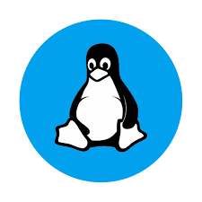
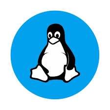

The programming language Python was conceived in the late 1980s, and its implementation was started in December 1989 by Guido van Rossum at CWI in the Netherlands as a successor to ABC capable of exception handling and interfacing with the Amoeba operating system.Van Rossum is Python's principal author, and his continuing central role in deciding the direction of Python is reflected in the title given to him by the Python community, Benevolent Dictator for Life (BDFL). (However, van Rossum stepped down as leader on July 12, 2018.). Python was named after the BBC TV show Monty Python's Flying Circus.
Python 2.0 was released on October 16, 2000, with many major new features, including a cycle-detecting garbage collector (in addition to reference counting) for memory management and support for Unicode. However, the most important change was to the development process itself, with a shift to a more transparent and community-backed process.
 

Python 3.0, a major, backwards-incompatible release, was released on December 3, 2008 after a long period of testing. Many of its major features have also been backported to the backwards-compatible, while by now unsupported, Python 2.6 and 2.7. While Linux and Mac comes with python pre-installed, we have to install python in Windows